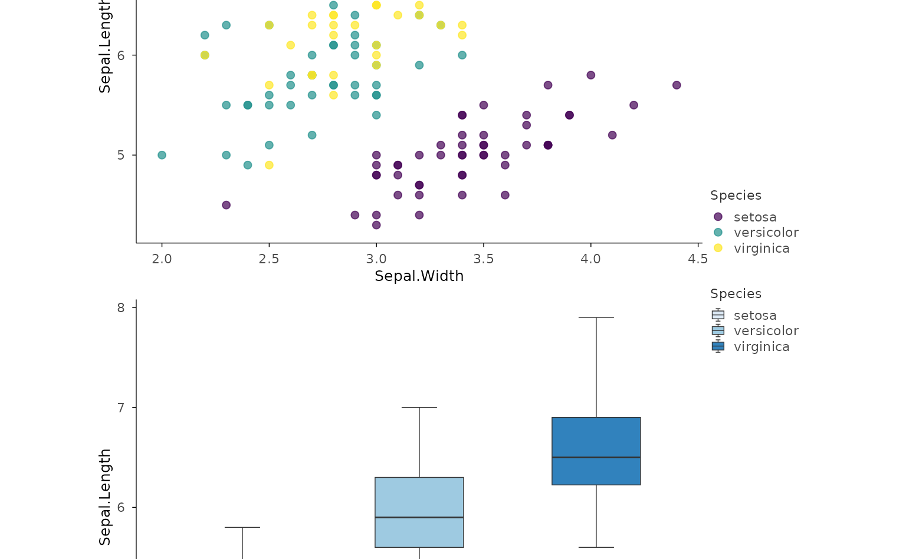
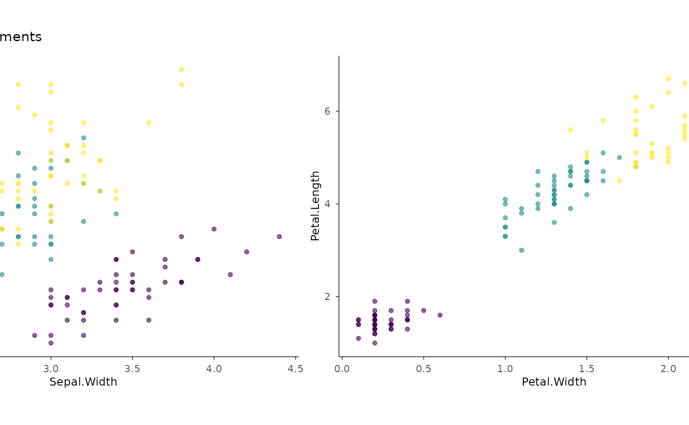
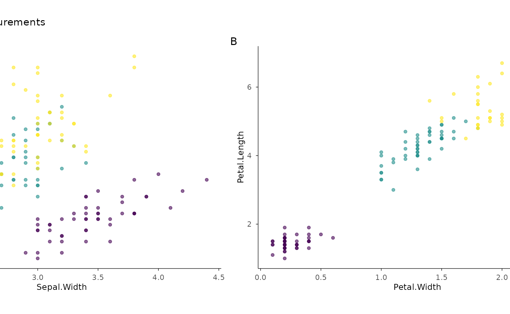
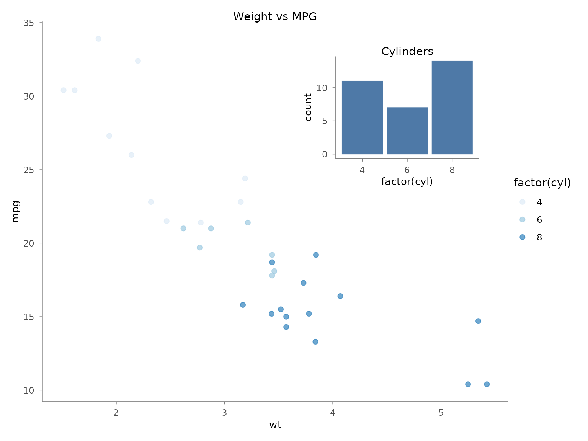
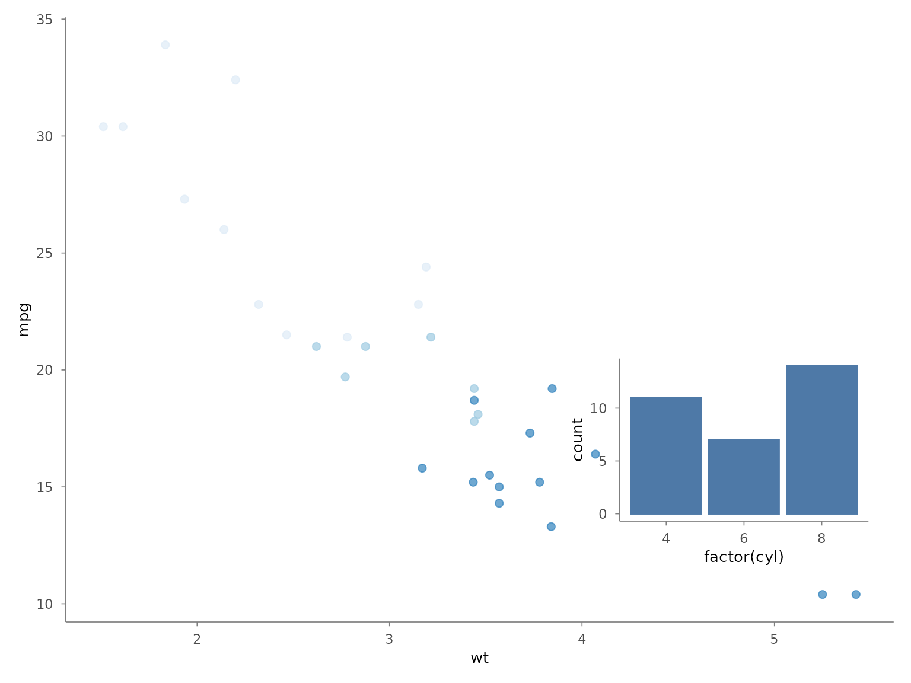
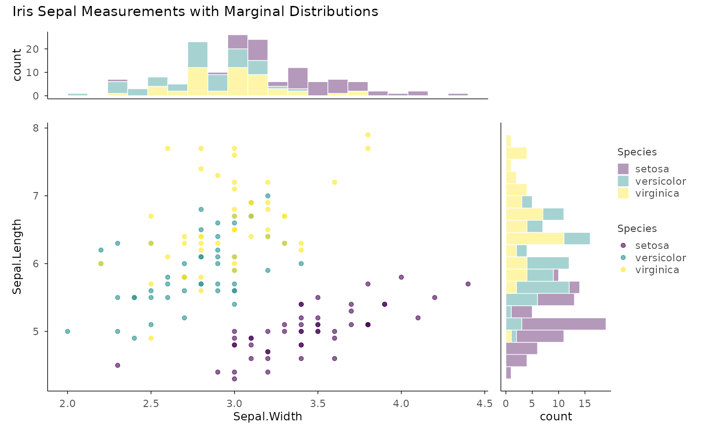
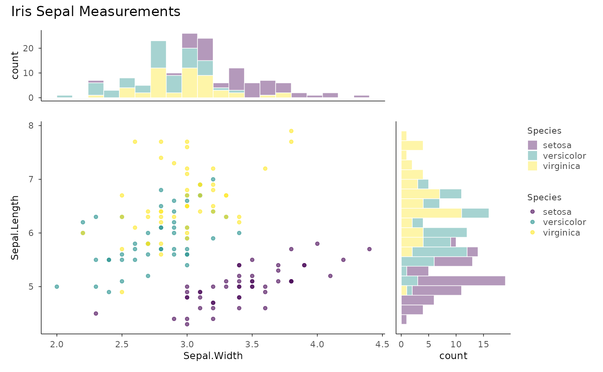
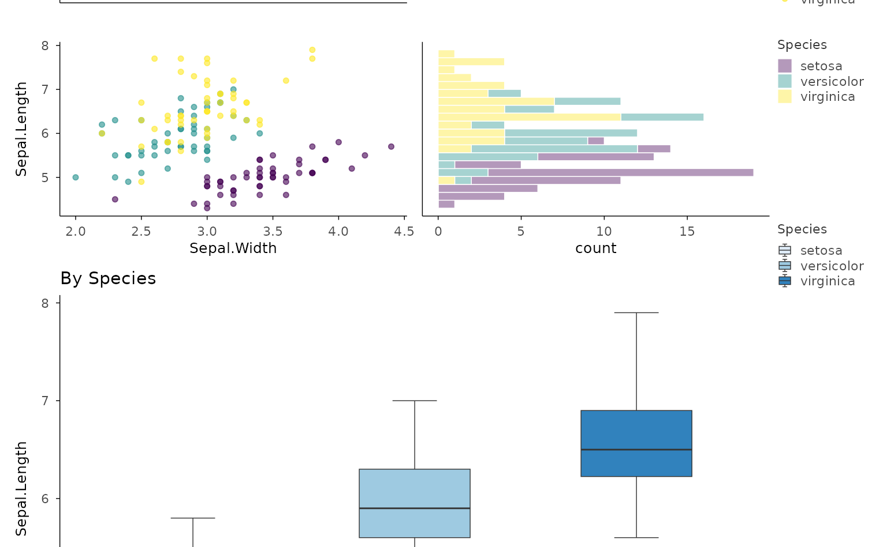

本页解决什么问题：Combine several plots into one figure with
compose_*(). 前置：已完成 customizing
下一步：→ relational
Introduction
The compose_*() family assembles multiple
plotit objects into multi-panel layouts. Unlike
split_*() (which splits one dataset across facets),
compose_*() combines independent plots —
each can have different data, geometries, scales, and coordinate
systems.
Three composers are available:
| Function | Layout |
|---|---|
compose_grid() |
Grid of plots (rows × columns) |
compose_inset() |
Floating overlay on a base plot |
compose_marginal() |
Scatter + marginal distributions |
All return a plotit_composite object that pipes
seamlessly into label_*(), style(), and
export().
compose_grid() — Grid Layout
Arrange any number of plots into a grid. By default, plots stack
vertically (ncol = 1).
Basic Grid
p1 <- iris |>
plotit(encode(x = Sepal.Width, y = Sepal.Length, colour = Species)) |>
mark_point(size = 2, alpha = 0.7) |>
scale_color(range = "viridis")
#> Warning: `range` = "viridis" with a discrete "colour" variable uses the discrete
#> "viridis" variant.
#> ℹ For a continuous gradient, map a numeric column instead.
#> Scale for colour is already present.
#> Adding another scale for colour, which will replace the existing scale.
p2 <- iris |>
plotit(encode(x = Species, y = Sepal.Length, fill = Species)) |>
mark_boxplot() |>
scale_fill(range = "brewer")
#> Scale for fill is already present.
#> Adding another scale for fill, which will replace the existing scale.
compose_grid(p1, p2) |>
label_title("Iris Dataset Overview")
Custom Layout
Control columns, rows, and relative sizes with ncol,
nrow, widths, and heights:
p1 <- mtcars |>
plotit(encode(x = wt, y = mpg, colour = factor(cyl))) |>
mark_point(size = 2) |>
scale_color(range = "brewer") |>
label_title("Weight vs MPG")
p2 <- mtcars |>
plotit(encode(x = factor(cyl))) |>
mark_bar() |>
label_title("Cylinder Count")
p3 <- mtcars |>
plotit(encode(x = hp, y = mpg, colour = factor(cyl))) |>
mark_point(size = 2) |>
scale_color(range = "brewer") |>
label_title("Horsepower vs MPG")
p4 <- mtcars |>
plotit(encode(x = factor(gear), y = mpg)) |>
mark_boxplot() |>
label_title("Gears vs MPG")
# 2<U+00D7>2 grid, first column twice as wide
compose_grid(p1, p2, p3, p4, ncol = 2, widths = c(2, 1)) |>
label_title("mtcars Dashboard") |>
label_caption("Source: Motor Trend, 1974")Shared Axes and Guides
p1 <- iris |>
plotit(encode(x = Sepal.Width, y = Sepal.Length, colour = Species)) |>
mark_point(alpha = 0.6) |>
scale_color(range = "viridis")
#> Warning: `range` = "viridis" with a discrete "colour" variable uses the discrete
#> "viridis" variant.
#> ℹ For a continuous gradient, map a numeric column instead.
#> Scale for colour is already present.
#> Adding another scale for colour, which will replace the existing scale.
p2 <- iris |>
plotit(encode(x = Petal.Width, y = Petal.Length, colour = Species)) |>
mark_point(alpha = 0.6) |>
scale_color(range = "viridis")
#> Warning: `range` = "viridis" with a discrete "colour" variable uses the discrete
#> "viridis" variant.
#> ℹ For a continuous gradient, map a numeric column instead.
#> Scale for colour is already present.
#> Adding another scale for colour, which will replace the existing scale.
# Shared legend, shared axes
compose_grid(p1, p2, ncol = 2, guides = "collect", axes = "collect") |>
label_title("Sepal vs Petal Measurements")
Sub-Figure Tags
Use tag_levels to auto-label sub-figures:
compose_grid(p1, p2, ncol = 2, tag_levels = "A") |>
label_title("Comparison of Iris Measurements")
Supported tag schemes: "A" (uppercase), "a"
(lowercase), "1" (numbers), "i" (roman
numerals), or custom character vectors like
c("(a)", "(b)").
compose_inset() — Floating Overlay
Place a smaller plot as an overlay on a base plot. Position is specified in normalised parent coordinates (0–1).
base <- mtcars |>
plotit(encode(x = wt, y = mpg, colour = factor(cyl))) |>
mark_point(size = 2, alpha = 0.7) |>
scale_color(range = "brewer") |>
label_title("Weight vs MPG")
#> Scale for colour is already present.
#> Adding another scale for colour, which will replace the existing scale.
inset <- mtcars |>
plotit(encode(x = factor(cyl))) |>
mark_bar() |>
label_title("Cylinders")
# Place inset in the top-right corner
compose_inset(base, inset,
left = 0.55, bottom = 0.55, right = 0.95, top = 0.95
)
# Larger inset with panel alignment
compose_inset(base, inset,
left = 0.60, bottom = 0.08, right = 0.98, top = 0.45,
align_to = "panel"
)
compose_marginal() — Scatter + Distributions
Create a scatter plot with marginal histogram or density plots on the top (x-axis) and right (y-axis). Axes are shared so bins align perfectly.
main <- iris |>
plotit(encode(x = Sepal.Width, y = Sepal.Length, colour = Species)) |>
mark_point(alpha = 0.6) |>
scale_color(range = "viridis") |>
label_title("")
#> Warning: `range` = "viridis" with a discrete "colour" variable uses the discrete
#> "viridis" variant.
#> ℹ For a continuous gradient, map a numeric column instead.
#> Scale for colour is already present.
#> Adding another scale for colour, which will replace the existing scale.
top <- iris |>
plotit(encode(x = Sepal.Width, fill = Species)) |>
mark_histogram(bins = 20, alpha = 0.4) |>
scale_fill(range = "viridis")
#> Warning: `range` = "viridis" with a discrete "fill" variable uses the discrete "viridis"
#> variant.
#> ℹ For a continuous gradient, map a numeric column instead.
#> Scale for fill is already present.
#> Adding another scale for fill, which will replace the existing scale.
right <- iris |>
plotit(encode(x = Sepal.Length, fill = Species)) |>
mark_histogram(bins = 20, alpha = 0.4) |>
scale_fill(range = "viridis") |>
project_cartesian(flip = TRUE)
#> Warning: `range` = "viridis" with a discrete "fill" variable uses the discrete "viridis"
#> variant.
#> ℹ For a continuous gradient, map a numeric column instead.
#> Scale for fill is already present.
#> Adding another scale for fill, which will replace the existing scale.
compose_marginal(main, top, right) |>
label_title("Iris Sepal Measurements with Marginal Distributions")
Adjusting Proportions
Control the relative size of marginal panels with widths
and heights:
# Larger marginals
compose_marginal(main, top, right, widths = c(3, 1), heights = c(1, 3)) |>
label_title("Iris Sepal Measurements")
Composing Composites
compose_grid() accepts plotit_composite
objects, so you can nest compositions:
# Create a composite of the scatter + marginals
scatter_with_marginals <- compose_marginal(main, top, right)
# Create a standalone boxplot
box <- iris |>
plotit(encode(x = Species, y = Sepal.Length, fill = Species)) |>
mark_boxplot() |>
scale_fill(range = "brewer") |>
label_title("By Species")
#> Scale for fill is already present.
#> Adding another scale for fill, which will replace the existing scale.
# Combine them
compose_grid(scatter_with_marginals, box, widths = c(3, 1)) |>
label_title("Iris Dataset: Two Views") |>
label_caption("Anderson's Iris Data, 1935")
Exporting Composites
Composite objects are exported the same way as single plots:
dashboard <- compose_grid(p1, p2, p3, p4, ncol = 2, tag_levels = "A") |>
label_title("Dashboard") |>
style(base_theme = ggplot2::theme_minimal(base_size = 12))
export(dashboard, "dashboard.png", width = 12, height = 8, dpi = 300)What’s Not Supported on Composites
Operations that modify individual plots (mark_*(),
scale_*(), project_*(),
split_*(), label_axis(),
label_legend()) are not supported on composite objects.
Build and style each sub-plot before composing.